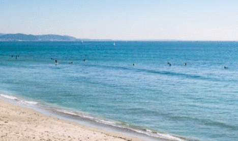
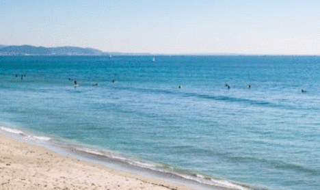

© Copyright 2020 Angela Smith

Designed and produced by Nathan Bendall


 


The best time to visit Japan is during spring (March to May) and autumn (September to November). This is when Japan is at its most vibrant, with delicate cherry blossom or bright red leaves adding contrast to the scenery. Remember, it can also be very crowded at this time.
Flights to Japan are cheaper than New Zealand, but still expensive.
Tokyo Non-
Osaka Non-
Sapporo 1 stop 15 hr 10 m £505
Japan is known worldwide for its traditional arts, including tea ceremonies, calligraphy and flower arranging. The country has a legacy of distinctive gardens, sculpture and poetry. Japan is home to more than a dozen UNESCO World Heritage sites and is the birthplace of sushi, one of its most famous.